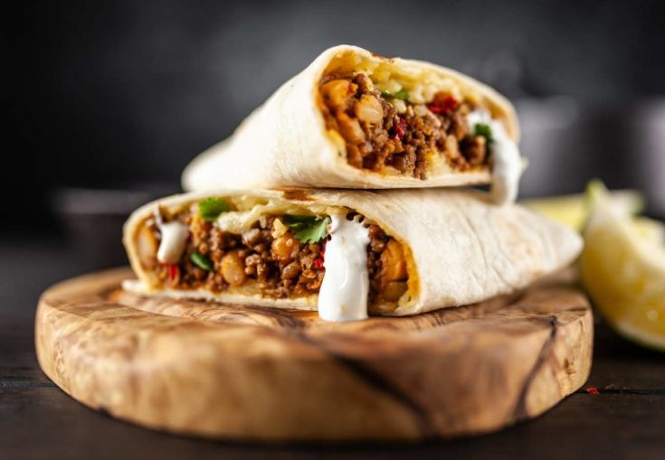

BURRITOS RECIPE

Ingredients for Burrito Filling:
- Ground beef or shredded chicken: 1 pound, cooked and seasoned
- Refried beans: 1 can (16 ounces)
- Cooked rice: 1 cup
- Shredded cheese (cheddar or Mexican blend): 1 cup
- Diced tomatoes: 1 cup
- Chopped onion: ½ cup
- Chopped fresh cilantro: ¼ cup
- Sliced jalapeños (optional): ½ cup
- Tortillas (large, flour): 6
- Sour cream and salsa for serving
Method:
- Prepare the filling ingredients - cook and season the ground beef or chicken, warm up the refried beans, and have the cooked rice and other toppings ready.
- Warm the tortillas briefly in the microwave or in a skillet to make them pliable.
- On each tortilla, spread a layer of refried beans down the center.
- Layer the cooked meat, rice, shredded cheese, diced tomatoes, chopped onion, cilantro, and sliced jalapeños (if using) over the beans.
- Fold in the sides of the tortilla, then roll it up tightly to form a burrito.
- Repeat the process with the remaining tortillas and filling ingredients.
- Heat a skillet over medium heat. Place the burritos seam-side down and cook for a few minutes on each side until golden brown and crispy.
- Serve the burritos with sour cream, salsa, or your favorite toppings.
- Enjoy your delicious homemade burritos!
Burritos are Ready to Enjoy!!!